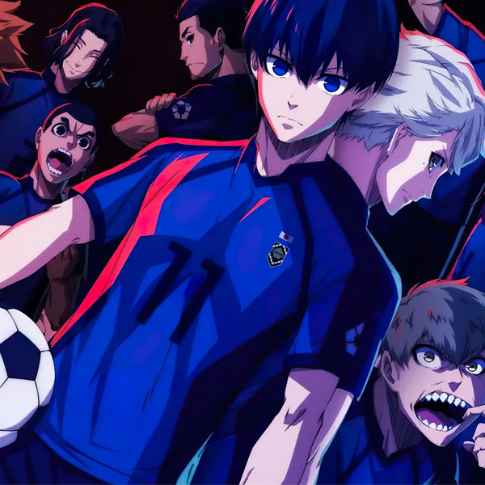

У 2018 році збірна Японії посіла 16-те місце на чемпіонаті світу з футболу. У результаті Японський футбольний союз наймає футбольну «загадку» Еґо Джінпачі. Його основний план — привести Японію до слави. «Blue Lock» — місце для створення найбільш егоїстичного нападника у світі. Ті, хто не пройдуть «Blue Lock», більше ніколи не зможуть представляти жодну японську команду.
Йоічі Ісагі — невідомий футболіст середньої школи, який не може збагнути свій власний стиль гри, вирішує приєднатися до програми, щоб стати найкращим нападником у світі. Щоб вижити в Синій в'язниці, гравцям доведеться ходити по головах, адже на кону вся футбольна кар'єра… До кінця дійде лише 1 із 300 учасників! Це манґа про егоїстичний футбол!